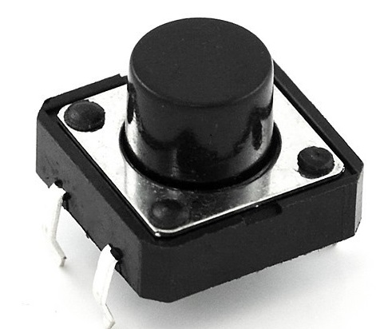
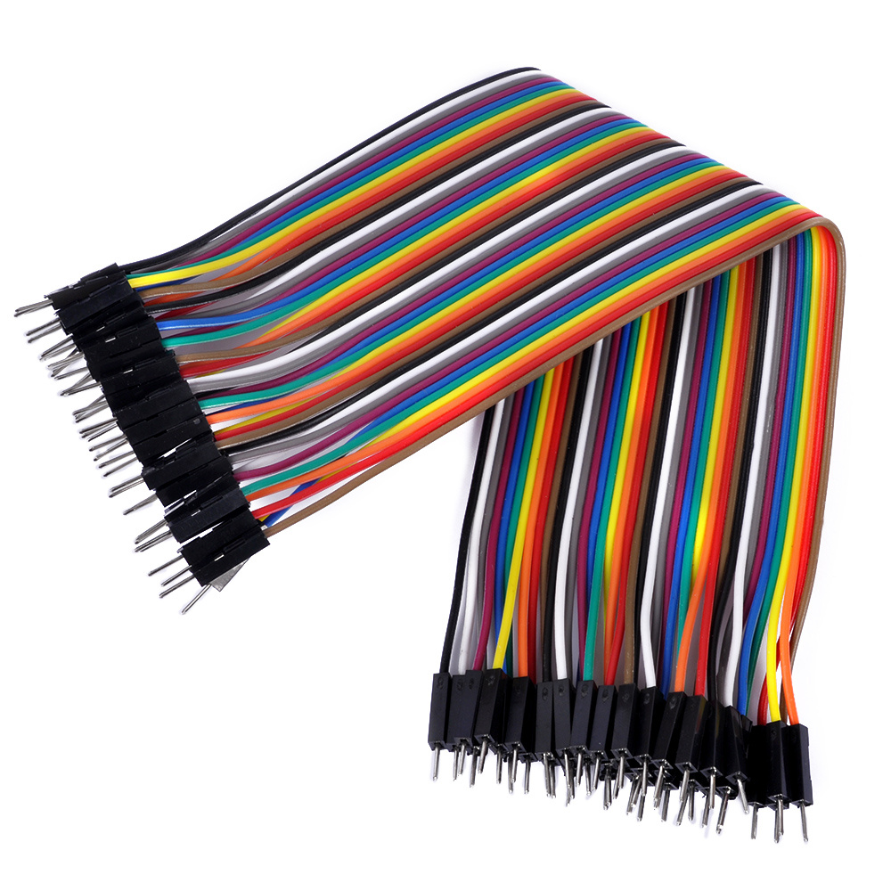
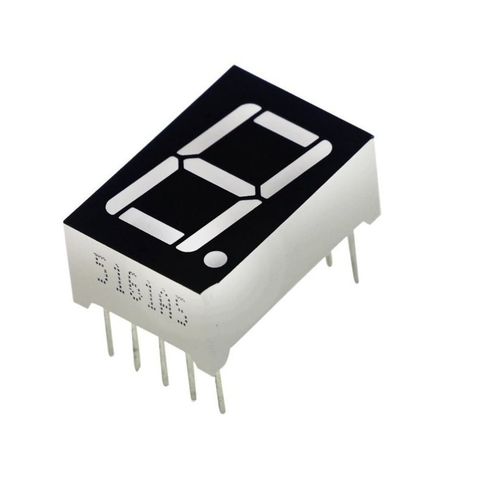
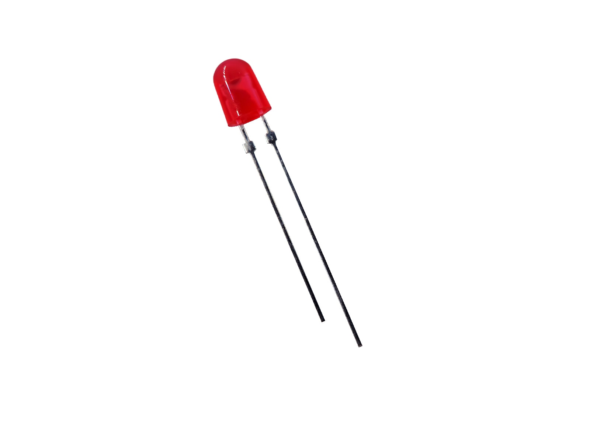
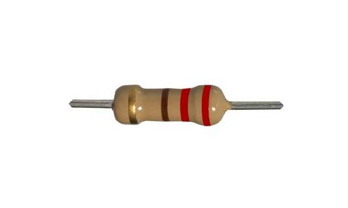
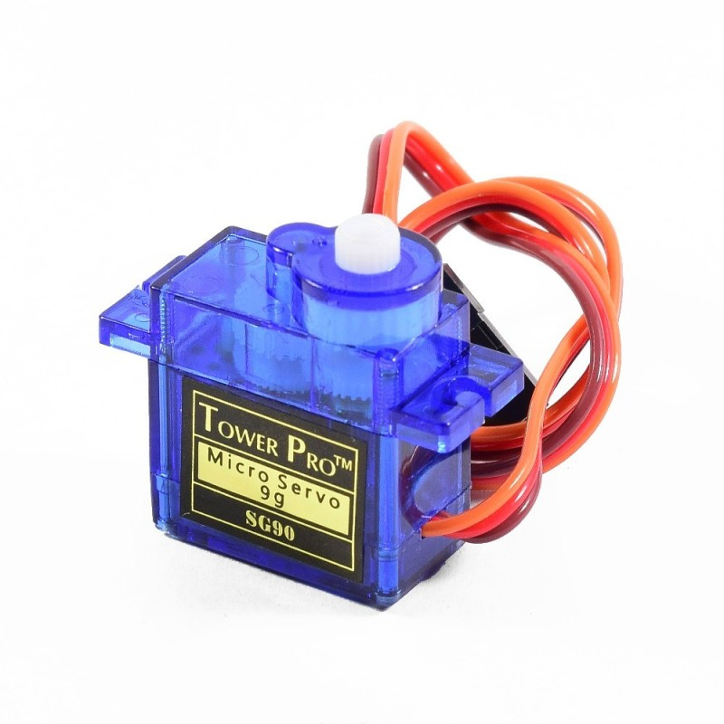
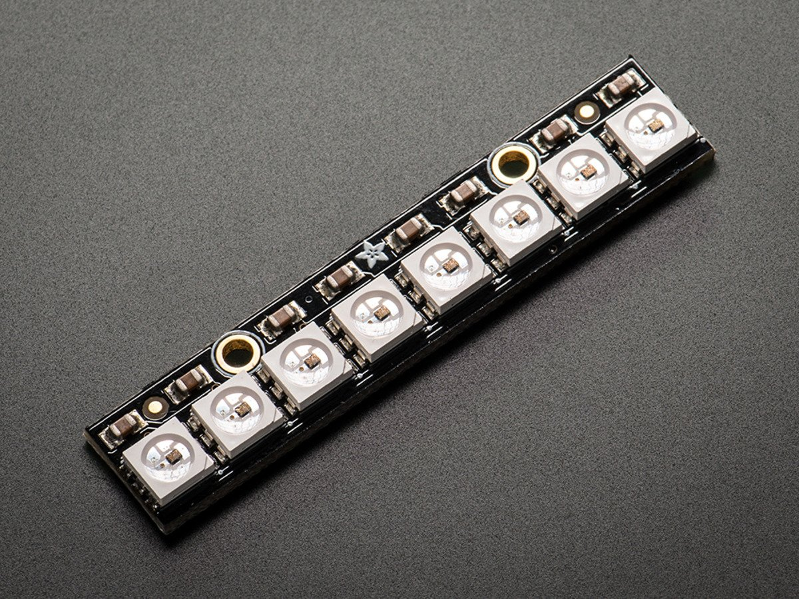
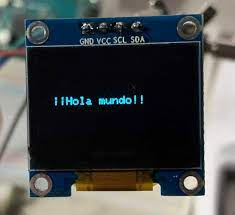
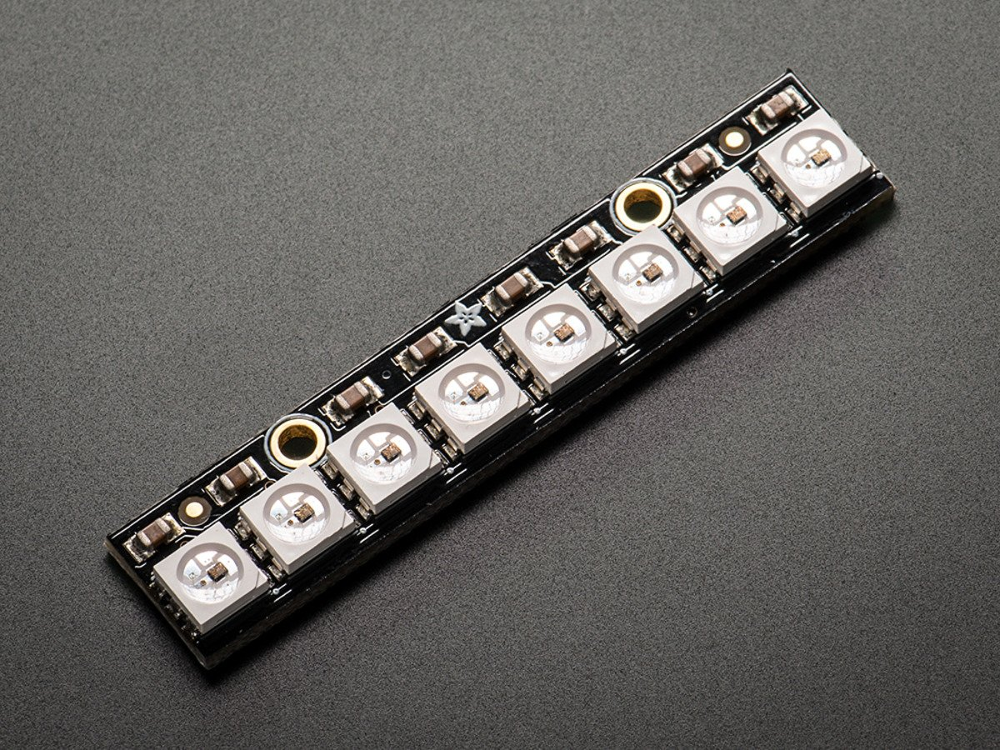
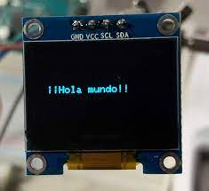

Portafolio de Actividades
Laboratorio. Elementos Programables I
Departamento de Ciencias e Ingenierías | Universidad Iberoamericana Puebla, México.
Attiny85 OUTPUTS


- Resumen -
Esta practica es para obtener el conocimiento necesario para manejar atinny85, pero, que es atinny85 ? El ATtiny85 es un microcontrolador de 8 bits que se basa en la arquitectura RISC (Reduced Instruction Set Computer). Tiene una cantidad limitada de pines de entrada/salida y una memoria programable, lo que lo hace adecuado para aplicaciones que no requieren una gran cantidad de recursos.
Los microcontroladores ATtiny, incluyendo el ATtiny85, se pueden programar en lenguajes de programación como C o ensamblador, y a menudo se utilizan con un programador especializado para cargar el código en el chip. Estos dispositivos son populares en la comunidad de electrónica y se utilizan en una variedad de proyectos, desde controladores de LED hasta sistemas de automatización del hogar.
- Introducción -
El ATtiny85 es un microcontrolador de la serie ATtiny fabricado por Atmel (ahora parte de Microchip Technology). Los microcontroladores ATtiny son componentes electrónicos utilizados en una amplia gama de aplicaciones, desde proyectos de electrónica de aficionados hasta aplicaciones industriales y comerciales. El ATtiny85 es uno de los modelos de esta serie y se destaca por su tamaño compacto y versatilidad.
Arquitectura de 8 bits: El ATtiny85 es un microcontrolador de 8 bits que utiliza una arquitectura RISC (Reduced Instruction Set Computer), lo que significa que realiza operaciones de procesamiento de datos en bloques de 8 bits. Memoria Flash y RAM: El ATtiny85 tiene una memoria flash programable para almacenar el programa de la aplicación y una pequeña cantidad de memoria RAM para almacenar datos temporales. Pines de E/S: El ATtiny85 tiene un número limitado de pines de entrada/salida, generalmente alrededor de 6-8 pines, dependiendo del encapsulado. Estos pines se pueden utilizar para conectar sensores, actuadores y otros dispositivos externos.
Periféricos integrados: El ATtiny85 incorpora diversos periféricos, como temporizadores, contadores y conversores analógico a digital (ADC), que permiten a los desarrolladores crear una variedad de aplicaciones.
- Materiales -
Los materiales ocupados en estas practicas son los siguientes:
       
 
- Desarrollo -
Seguimos las indicaciones de el curso de ATTINY 85 conectando las piezas como resistencia, jumpers, display etc...
Simulación

Diseño

Construcción
Seguimos los pasos de los cursos para conectar y empezamos a programar el arduino junto el atinny conectando los componentes electronicos
- Resultados -
Estos son las practicas que he realizado:
- Conclusiones -
el ATtiny85 es una herramienta valiosa para aprender, experimentar y desarrollar proyectos de electrónica y programación embebida, especialmente si tienes en cuenta sus ventajas y limitaciones. Su uso te permitirá ganar experiencia práctica en el mundo de la tecnología y la electrónica.
Elección adecuada para proyectos compactos: El ATtiny85 es una excelente elección cuando trabajas en proyectos con restricciones de espacio debido a su tamaño compacto. Puede caber en aplicaciones donde otros microcontroladores más grandes no son prácticos. Aprendizaje de programación embebida: El ATtiny85 es una plataforma ideal para aprender sobre programación embebida y control de hardware. Puedes desarrollar tus habilidades de programación y electrónica utilizando este microcontrolador. Economía de recursos: Dado su tamaño y capacidad limitada de E/S, aprender a aprovechar al máximo los recursos disponibles en el ATtiny85 es una valiosa lección. Esto te ayudará a ser más eficiente y creativo en tus proyectos. Eficiencia energética: Si estás interesado en proyectos que funcionen con baterías o donde la eficiencia energética es fundamental, el ATtiny85 es una opción excelente debido a su bajo consumo de energía. Comunidad activa: Existe una comunidad activa de entusiastas y desarrolladores que utilizan el ATtiny85 en una amplia variedad de proyectos. Puedes encontrar recursos en línea, tutoriales y ejemplos que te ayudarán a desarrollar tus habilidades. Limitaciones de E/S: Debes estar al tanto de las limitaciones de E/S del ATtiny85, ya que tiene un número limitado de pines. Esto puede requerir una planificación cuidadosa en tus proyectos. Desarrollo de habilidades: Trabajar con un microcontrolador como el ATtiny85 te brindará experiencia en programación, electrónica y solución de problemas, lo que te ayudará a desarrollar habilidades valiosas. Flexibilidad en aplicaciones: Aunque es pequeño, el ATtiny85 es sorprendentemente versátil y puede utilizarse en una variedad de aplicaciones, desde controladores de LED hasta sensores y actuadores.
- Referencias -
Microchip AVR® microcontroller primer: programming and interfacing, third edition (synthesis lectures on digital circuits and systems), BARRETT, Steven F. Pack Daniel J., Editorial Morgan & Claypool, 2019.
K. He, X. Zhang, S. Ren and J. Sun, "Deep Residual Learning for Image Recognition," 2016 IEEE Conference on Computer Vision and Pattern Recognition (CVPR), Las Vegas, NV, USA, 2016, pp. 770-778, doi: 10.1109/CVPR.2016.90.
J. D. Hunter, "Matplotlib: A 2D Graphics Environment," in Computing in Science & Engineering, vol. 9, no. 3, pp. 90-95, May-June 2007, doi: 10.1109/MCSE.2007.55.
- Descargables -
Descargar documento PDF: documento.pdf
Descargar codigo Arduino: codigo.ino
Descargar Archivo 3d .STL: pieza.stl